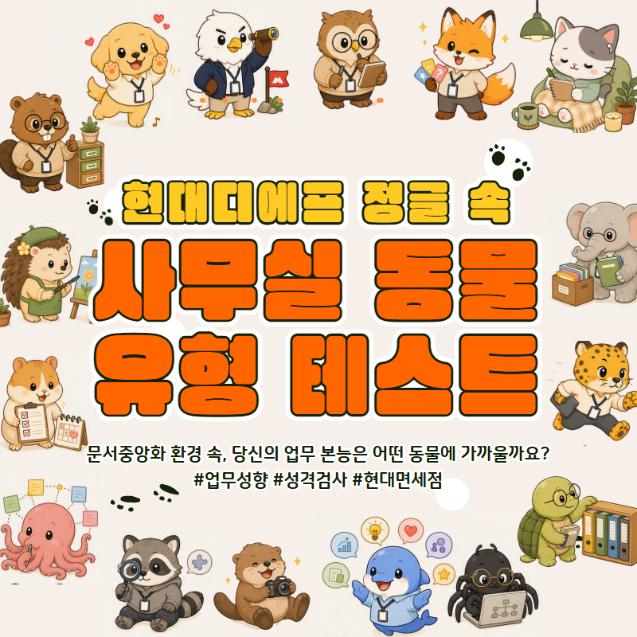

🐾 16가지 업무 동물 유형
🐬 🦅 🐙 🐢
Office Animal Test
업무 중 내 속에 감춰진
동물 본능은 뭘까?

회의, 협업, 파일 정리 방식에 숨어 있는 나의 업무 스타일을 찾아보세요.
문서중앙화가 내 유형에 어떤 도움을 주는지도 함께 알려드려요.
총 16문항 · 개인식별정보 없이 최종 유형만 익명 통계로 수집됩니다

회의, 협업, 파일 정리 방식에 숨어 있는 나의 업무 스타일을 찾아보세요.
문서중앙화가 내 유형에 어떤 도움을 주는지도 함께 알려드려요.
총 16문항 · 개인식별정보 없이 최종 유형만 익명 통계로 수집됩니다